README
I wrote a .obj to .bez conversion utility. Feel free to use and modify it. Please give credit if you do.
Extra credit features: Video, Hidden line mode, Obj file loading, multiple file loading, gaussian curvature, bezier subdivision.
Video demonstrating basic and extra credit features
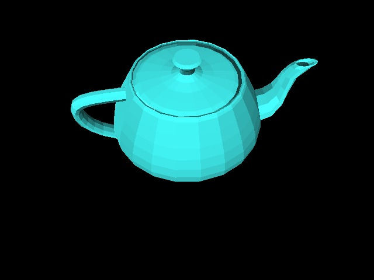
Uniform subdivision with stepsize 0.2. Flat, fill shading.
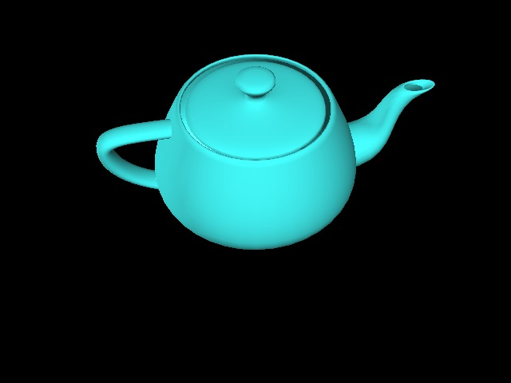
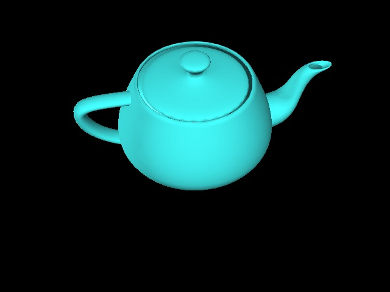
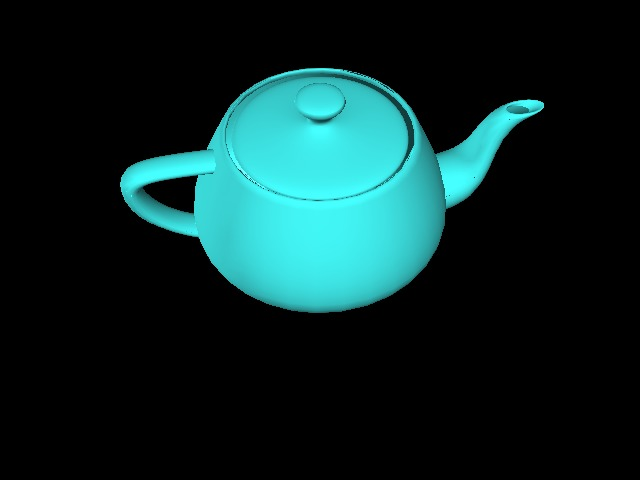
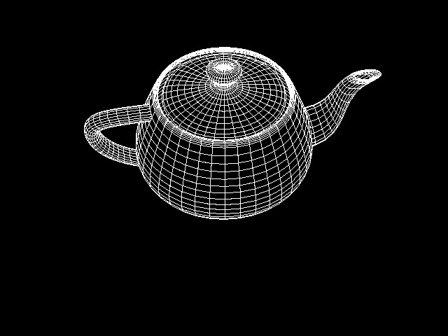
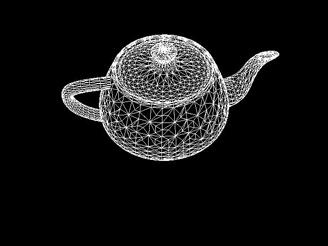
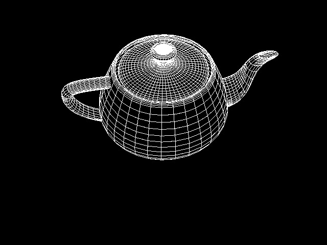
In order: Uniform subdivision with stepsize 0.1.
Adaptive triangular subdivision with epsilon 0.01.
Adaptive Bezier subdivision with epsilon 0.03.
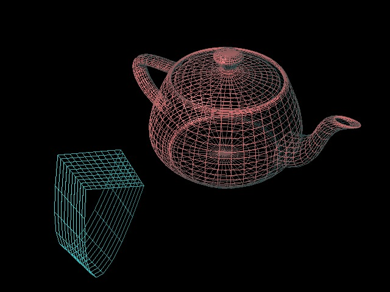
Multiple objects. Teapot and arch, uniform subdivision, wireframe mode, transformations.
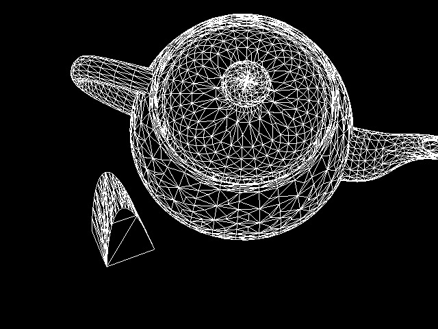
Hidden line mode. Adaptive subdivision with epsilon 0.01.
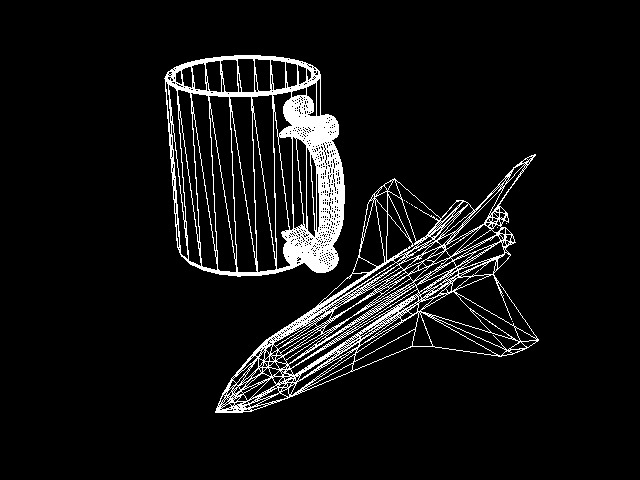
Custom .bez inputs: cup.bez and shuttle.bez. Hidden line mode.
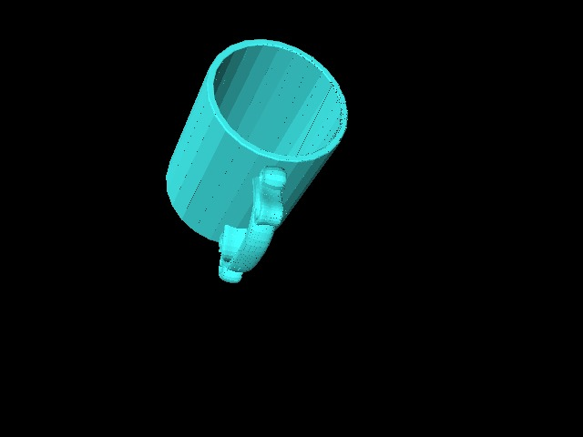
Just the cup, with flat shading. There's a bit of floating point noise.
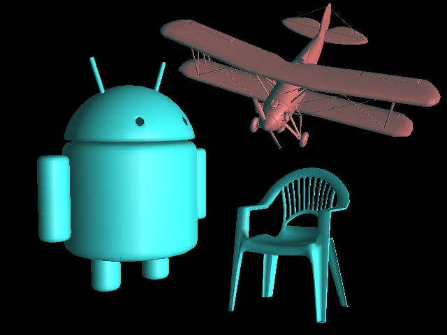
Multiple obj files.
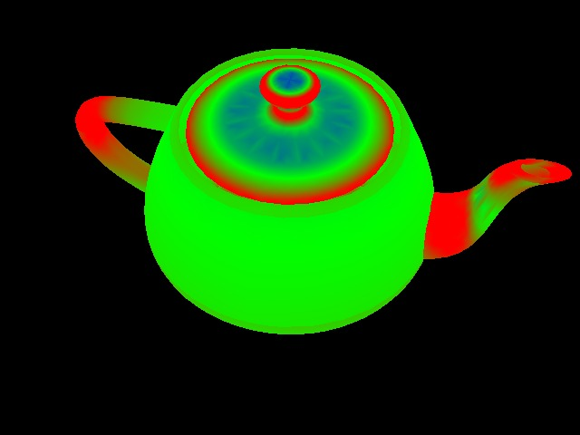
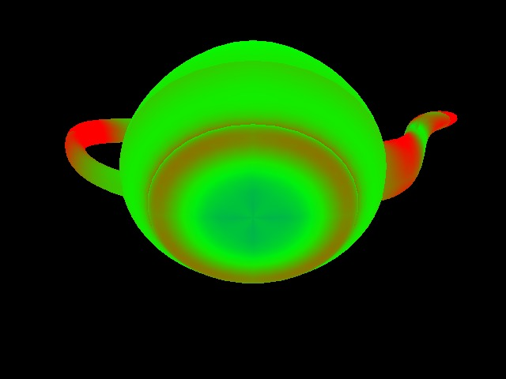
Gaussian curvature of the teapot.